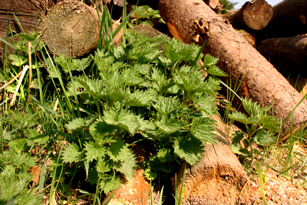

De netel is wellicht de kampioen van alle wilde groenten! Eerst en vooral is de plant gemakkelijk herkenbaar: het volstaat de plant even aan te raken om na te gaan of we met een netel te maken hebben. Bovendien is de plant overal te vinden. Ik daag eenieder uit die beweert in een straal van 100 meter rondom zijn woning geen netels te vinden, zelfs in het midden van de stad. Ten slotte heeft de plant een uitzonderlijke smaak die goed tot zijn recht komt in tal van bereidingen.
De netel wordt uiteraard niet rauw gegeten. Toch zou de geoefende plukker brandnetels met de blote hand kunnen plukken. Hiervoor moet de richting van de brandhaartjes worden gevolgd. Vervolgens moeten de bladeren worden opgerold om de brandhaartjes te breken. Zo kan de brandnetel toch rauw worden gegeten. Dit blijft echter een risicovolle en arbeidsintensieve onderneming. Doorgaans wordt dan ook de voorkeur gegeven aan het gebruik van handschoenen en een kookpot!
Bij het plukken neem ik alleen de eindknop en de vier eerste bladeren. De andere bladeren zijn ook eetbaar, maar gezien de netelovervloed geef ik er de voorkeur aan enkel de beste delen van de plant te gebruiken.
Netelsoep is ongetwijfeld de bekendste netelbereiding. Bovendien is netelsoep het gerecht bij uitstek in de wilde keuken. Aan de soep kunnen eventueel ook andere planten worden toegevoegd. Hoe dan ook, het is een gemakkelijk te bereiden aanrader.
Verder kunnen netels zoals spinazie worden klaargemaakt. In het stoommandje, in een stoofpotje of bijvoorbeeld in lasagnes. Het is een uitstekende en veelzijdige groente. Er kan zelfs een verrassende gelei van worden gemaakt!